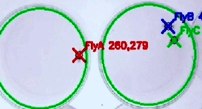

sociSleep
Add your sociSleep screenshot or GIF here.
Recommended: 16:10 image or GIF
Add your sociSleep screenshot or GIF here.
Recommended: 16:10 image or GIF
sociSleep Python
An identity-preserving tracking and analysis system for quantifying sleep, locomotion, and social interactions in groups of Drosophila.
- Individual-level sleep analysis in social groups
- Quantification of social proximity and co-movement
- Automated behavioral tracking and identity preservation
- Integrated visualization and quantitative analysis